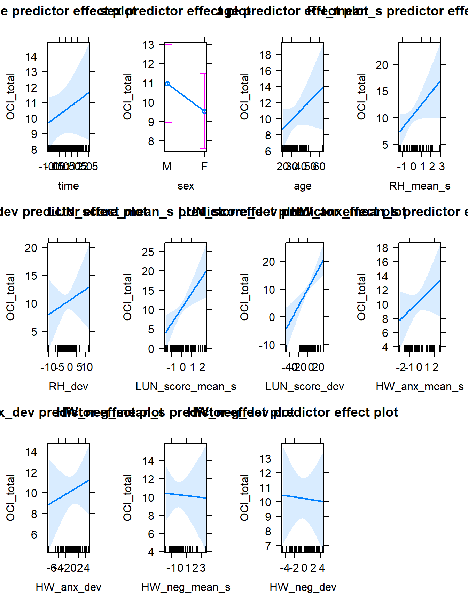

Last updated: 2019-12-06
Checks: 7 0
Knit directory: wflow_OCIR/
This reproducible R Markdown analysis was created with workflowr (version 1.5.0). The Checks tab describes the reproducibility checks that were applied when the results were created. The Past versions tab lists the development history.
Great! Since the R Markdown file has been committed to the Git repository, you know the exact version of the code that produced these results.
Great job! The global environment was empty. Objects defined in the global environment can affect the analysis in your R Markdown file in unknown ways. For reproduciblity it’s best to always run the code in an empty environment.
The command set.seed(20191203) was run prior to running the code in the R Markdown file. Setting a seed ensures that any results that rely on randomness, e.g. subsampling or permutations, are reproducible.
Great job! Recording the operating system, R version, and package versions is critical for reproducibility.
Nice! There were no cached chunks for this analysis, so you can be confident that you successfully produced the results during this run.
Great job! Using relative paths to the files within your workflowr project makes it easier to run your code on other machines.
Great! You are using Git for version control. Tracking code development and connecting the code version to the results is critical for reproducibility. The version displayed above was the version of the Git repository at the time these results were generated.
Note that you need to be careful to ensure that all relevant files for the analysis have been committed to Git prior to generating the results (you can use wflow_publish or wflow_git_commit). workflowr only checks the R Markdown file, but you know if there are other scripts or data files that it depends on. Below is the status of the Git repository when the results were generated:
Ignored files:
Ignored: .Rhistory
Ignored: .Rproj.user/
Ignored: analysis/01_data_preprocessing.nb.html
Ignored: analysis/02_basic_analysis.nb.html
Ignored: analysis/03_change_OCIR.nb.html
Ignored: analysis/04_change_LUNSERS.nb.html
Ignored: analysis/05_change_PANSS.nb.html
Ignored: analysis/06_interrelation.nb.html
Ignored: analysis/07_LME_modeling.nb.html
Ignored: analysis/08_bnlearn_modeling.nb.html
Untracked files:
Untracked: 06_interrelation.Rmd
Untracked: 06_interrelation.nb.html
Untracked: data/data.csv
Untracked: data/data.rds
Untracked: data/data_transformed.rds
Untracked: data/ocir_raw_data.csv
Note that any generated files, e.g. HTML, png, CSS, etc., are not included in this status report because it is ok for generated content to have uncommitted changes.
There are no past versions. Publish this analysis with wflow_publish() to start tracking its development.
suppressPackageStartupMessages({
library(tidyverse)
library(glue)
library(anselmEDA)
library(here)
library(patchwork)
library(ggsci)
library(lemon)
library(lme4)
library(lmerTest)
library(effects)
})
theme_set(theme_bw())data <- readRDS(paste0(here(), "/data/data.rds"))tmp <- data %>% select(hosp_id,
sex, age,
measure_point,
starts_with('OCI'),
starts_with('HP'),
starts_with('HW'),
EPS:RH, LUN_score) %>%
filter(measure_point >= 0) %>%
drop_na %>%
group_by(hosp_id) %>%
mutate(LUN_score_mean=mean(LUN_score),
LUN_score_dev=LUN_score - mean(LUN_score),
RH_mean=mean(RH),
RH_dev=RH - mean(RH),
EPS_mean=mean(EPS),
EPS_dev=EPS - mean(EPS),
antichol_mean=mean(antichol),
antichol_dev=antichol - mean(antichol),
autonomic_mean=mean(autonomic),
autonomic_dev=autonomic - mean(autonomic),
allergic_mean=mean(allergic),
allergic_dev=allergic - mean(allergic),
psychic_mean=mean(psychic),
psychic_dev=psychic - mean(psychic),
hormonal_mean=mean(hormonal),
hormonal_dev=hormonal - mean(hormonal),
miscellany_mean=mean(miscellany),
miscellany_dev=miscellany - mean(miscellany),
HP_phy_mean=mean(HP_phy),
HP_phy_dev=HP_phy - mean(HP_phy),
HP_emo_mean=mean(HP_emo),
HP_emo_dev=HP_emo - mean(HP_emo),
HW_pos_mean=mean(HW_pos),
HW_pos_dev=HW_pos - mean(HW_pos),
HW_neg_mean=mean(HW_neg),
HW_neg_dev=HW_neg - mean(HW_neg),
HW_acti_mean=mean(HW_acti),
HW_acti_dev=HW_acti - mean(HW_acti),
HW_auti_mean=mean(HW_auti),
HW_auti_dev=HW_auti - mean(HW_auti),
HW_anx_mean=mean(HW_anx),
HW_anx_dev=HW_anx - mean(HW_anx)) %>%
ungroup %>%
mutate(time=scale(measure_point),
LUN_score_mean_s=scale(LUN_score_mean),
RH_mean_s=scale(RH_mean),
HP_phy_mean_s=scale(HP_phy_mean),
HP_emo_mean_s=scale(HP_emo_mean),
HW_pos_mean_s=scale(HW_pos_mean),
HW_neg_mean_s=scale(HW_neg_mean),
HW_acti_mean_s=scale(HW_acti_mean),
HW_auti_mean_s=scale(HW_auti_mean),
HW_anx_mean_s=scale(HW_anx_mean))model_comparison <- function(dv) {
cat("====================== ")
cat(glue("Dependnet variable: {dv}"))
cat(" ======================\n\n")
model_0 <- lmer(as.formula(glue("{dv}~ time + (1|hosp_id)")), data = tmp, REML = FALSE)
model_1 <- lmer(as.formula(glue("{dv}~ time + sex + age + (1|hosp_id)")), data = tmp, REML = FALSE)
model_2 <- lmer(as.formula(glue("{dv}~ time + sex + age +
RH_mean_s + RH_dev +
(1|hosp_id)")), data = tmp, REML = FALSE)
model_3 <- lmer(as.formula(glue("{dv}~ time + sex + age +
RH_mean_s + RH_dev +
LUN_score_mean_s + LUN_score_dev +
(1|hosp_id)")), data = tmp, REML = FALSE)
model_4 <- lmer(as.formula(glue("{dv}~ time + sex + age +
RH_mean_s + RH_dev +
LUN_score_mean_s + LUN_score_dev +
HW_anx_mean_s + HW_anx_dev +
HW_neg_mean_s + HW_neg_dev +
(1|hosp_id)")), data = tmp, REML = FALSE)
model_5 <- lmer(as.formula(glue("{dv}~ time + sex + age +
RH_mean_s + RH_dev +
LUN_score_mean_s + LUN_score_dev +
HW_pos_mean_s + HW_pos_dev +
HW_acti_mean_s + HW_acti_dev +
HW_auti_mean_s + HW_auti_dev +
HW_anx_mean_s + HW_anx_dev +
HW_neg_mean_s + HW_neg_dev +
(1|hosp_id)")), data = tmp, REML = FALSE)
model_6 <- lmer(as.formula(glue("{dv}~ time + sex + age +
RH_mean_s + RH_dev +
LUN_score_mean_s + LUN_score_dev +
HW_pos_mean_s + HW_pos_dev +
HW_acti_mean_s + HW_acti_dev +
HW_auti_mean_s + HW_auti_dev +
HW_anx_mean_s + HW_anx_dev +
HW_neg_mean_s + HW_neg_dev +
HP_phy_mean_s + HP_phy_dev +
HP_emo_mean_s + HP_emo_dev +
(1|hosp_id)")), data = tmp, REML = FALSE)
print(anova(model_0, model_1, model_2, model_3, model_4, model_5, model_6))
invisible(list(model_0, model_1, model_2, model_3, model_4, model_5, model_6))
}model_comparison('OCI_total')====================== Dependnet variable: OCI_total ======================
Data: tmp
Models:
model_0: as.formula(glue("{dv}~ time + (1|hosp_id)"))
model_1: as.formula(glue("{dv}~ time + sex + age + (1|hosp_id)"))
model_2: as.formula(glue("{dv}~ time + sex + age + \n RH_mean_s + RH_dev +\n (1|hosp_id)"))
model_3: as.formula(glue("{dv}~ time + sex + age + \n RH_mean_s + RH_dev +\n LUN_score_mean_s + LUN_score_dev +\n (1|hosp_id)"))
model_4: as.formula(glue("{dv}~ time + sex + age + \n RH_mean_s + RH_dev +\n LUN_score_mean_s + LUN_score_dev + \n HW_anx_mean_s + HW_anx_dev +\n HW_neg_mean_s + HW_neg_dev +\n (1|hosp_id)"))
model_5: as.formula(glue("{dv}~ time + sex + age + \n RH_mean_s + RH_dev +\n LUN_score_mean_s + LUN_score_dev + \n HW_pos_mean_s + HW_pos_dev +\n HW_acti_mean_s + HW_acti_dev +\n HW_auti_mean_s + HW_auti_dev +\n HW_anx_mean_s + HW_anx_dev +\n HW_neg_mean_s + HW_neg_dev +\n (1|hosp_id)"))
model_6: as.formula(glue("{dv}~ time + sex + age + \n RH_mean_s + RH_dev +\n LUN_score_mean_s + LUN_score_dev + \n HW_pos_mean_s + HW_pos_dev +\n HW_acti_mean_s + HW_acti_dev +\n HW_auti_mean_s + HW_auti_dev +\n HW_anx_mean_s + HW_anx_dev +\n HW_neg_mean_s + HW_neg_dev +\n HP_phy_mean_s + HP_phy_dev + \n HP_emo_mean_s + HP_emo_dev + \n (1|hosp_id)"))
Df AIC BIC logLik deviance Chisq Chi Df Pr(>Chisq)
model_0 4 1786.4 1800.3 -889.21 1778.4
model_1 6 1788.3 1809.2 -888.16 1776.3 2.1080 2 0.3485
model_2 8 1729.4 1757.2 -856.72 1713.4 62.8766 2 2.221e-14 ***
model_3 10 1703.2 1737.9 -841.58 1683.2 30.2836 2 2.655e-07 ***
model_4 14 1709.0 1757.6 -840.49 1681.0 2.1738 4 0.7038
model_5 20 1718.7 1788.1 -839.35 1678.7 2.2870 6 0.8915
model_6 24 1725.8 1809.1 -838.90 1677.8 0.8914 4 0.9258
---
Signif. codes: 0 '***' 0.001 '**' 0.01 '*' 0.05 '.' 0.1 ' ' 1model_comparison('OCI_check')====================== Dependnet variable: OCI_check ======================
Data: tmp
Models:
model_0: as.formula(glue("{dv}~ time + (1|hosp_id)"))
model_1: as.formula(glue("{dv}~ time + sex + age + (1|hosp_id)"))
model_2: as.formula(glue("{dv}~ time + sex + age + \n RH_mean_s + RH_dev +\n (1|hosp_id)"))
model_3: as.formula(glue("{dv}~ time + sex + age + \n RH_mean_s + RH_dev +\n LUN_score_mean_s + LUN_score_dev +\n (1|hosp_id)"))
model_4: as.formula(glue("{dv}~ time + sex + age + \n RH_mean_s + RH_dev +\n LUN_score_mean_s + LUN_score_dev + \n HW_anx_mean_s + HW_anx_dev +\n HW_neg_mean_s + HW_neg_dev +\n (1|hosp_id)"))
model_5: as.formula(glue("{dv}~ time + sex + age + \n RH_mean_s + RH_dev +\n LUN_score_mean_s + LUN_score_dev + \n HW_pos_mean_s + HW_pos_dev +\n HW_acti_mean_s + HW_acti_dev +\n HW_auti_mean_s + HW_auti_dev +\n HW_anx_mean_s + HW_anx_dev +\n HW_neg_mean_s + HW_neg_dev +\n (1|hosp_id)"))
model_6: as.formula(glue("{dv}~ time + sex + age + \n RH_mean_s + RH_dev +\n LUN_score_mean_s + LUN_score_dev + \n HW_pos_mean_s + HW_pos_dev +\n HW_acti_mean_s + HW_acti_dev +\n HW_auti_mean_s + HW_auti_dev +\n HW_anx_mean_s + HW_anx_dev +\n HW_neg_mean_s + HW_neg_dev +\n HP_phy_mean_s + HP_phy_dev + \n HP_emo_mean_s + HP_emo_dev + \n (1|hosp_id)"))
Df AIC BIC logLik deviance Chisq Chi Df Pr(>Chisq)
model_0 4 1069.5 1083.4 -530.74 1061.47
model_1 6 1073.4 1094.2 -530.71 1061.42 0.0558 2 0.9725
model_2 8 1031.6 1059.4 -507.79 1015.58 45.8356 2 1.114e-10 ***
model_3 10 1009.4 1044.2 -494.72 989.44 26.1362 2 2.111e-06 ***
model_4 14 1013.6 1062.2 -492.79 985.58 3.8628 4 0.4249
model_5 20 1018.3 1087.7 -489.13 978.27 7.3155 6 0.2927
model_6 24 1025.7 1109.0 -488.83 977.66 0.6036 4 0.9627
---
Signif. codes: 0 '***' 0.001 '**' 0.01 '*' 0.05 '.' 0.1 ' ' 1model_comparison('OCI_hoard')====================== Dependnet variable: OCI_hoard ======================
Data: tmp
Models:
model_0: as.formula(glue("{dv}~ time + (1|hosp_id)"))
model_1: as.formula(glue("{dv}~ time + sex + age + (1|hosp_id)"))
model_2: as.formula(glue("{dv}~ time + sex + age + \n RH_mean_s + RH_dev +\n (1|hosp_id)"))
model_3: as.formula(glue("{dv}~ time + sex + age + \n RH_mean_s + RH_dev +\n LUN_score_mean_s + LUN_score_dev +\n (1|hosp_id)"))
model_4: as.formula(glue("{dv}~ time + sex + age + \n RH_mean_s + RH_dev +\n LUN_score_mean_s + LUN_score_dev + \n HW_anx_mean_s + HW_anx_dev +\n HW_neg_mean_s + HW_neg_dev +\n (1|hosp_id)"))
model_5: as.formula(glue("{dv}~ time + sex + age + \n RH_mean_s + RH_dev +\n LUN_score_mean_s + LUN_score_dev + \n HW_pos_mean_s + HW_pos_dev +\n HW_acti_mean_s + HW_acti_dev +\n HW_auti_mean_s + HW_auti_dev +\n HW_anx_mean_s + HW_anx_dev +\n HW_neg_mean_s + HW_neg_dev +\n (1|hosp_id)"))
model_6: as.formula(glue("{dv}~ time + sex + age + \n RH_mean_s + RH_dev +\n LUN_score_mean_s + LUN_score_dev + \n HW_pos_mean_s + HW_pos_dev +\n HW_acti_mean_s + HW_acti_dev +\n HW_auti_mean_s + HW_auti_dev +\n HW_anx_mean_s + HW_anx_dev +\n HW_neg_mean_s + HW_neg_dev +\n HP_phy_mean_s + HP_phy_dev + \n HP_emo_mean_s + HP_emo_dev + \n (1|hosp_id)"))
Df AIC BIC logLik deviance Chisq Chi Df Pr(>Chisq)
model_0 4 963.59 977.48 -477.80 955.59
model_1 6 966.46 987.30 -477.23 954.46 1.1270 2 0.569208
model_2 8 929.89 957.67 -456.95 913.89 40.5731 2 1.548e-09 ***
model_3 10 921.65 956.37 -450.82 901.65 12.2438 2 0.002194 **
model_4 14 926.88 975.50 -449.44 898.88 2.7621 4 0.598397
model_5 20 937.07 1006.52 -448.54 897.07 1.8125 6 0.936109
model_6 24 943.13 1026.46 -447.57 895.13 1.9417 4 0.746486
---
Signif. codes: 0 '***' 0.001 '**' 0.01 '*' 0.05 '.' 0.1 ' ' 1model_comparison('OCI_neutr')====================== Dependnet variable: OCI_neutr ======================
Data: tmp
Models:
model_0: as.formula(glue("{dv}~ time + (1|hosp_id)"))
model_1: as.formula(glue("{dv}~ time + sex + age + (1|hosp_id)"))
model_2: as.formula(glue("{dv}~ time + sex + age + \n RH_mean_s + RH_dev +\n (1|hosp_id)"))
model_3: as.formula(glue("{dv}~ time + sex + age + \n RH_mean_s + RH_dev +\n LUN_score_mean_s + LUN_score_dev +\n (1|hosp_id)"))
model_4: as.formula(glue("{dv}~ time + sex + age + \n RH_mean_s + RH_dev +\n LUN_score_mean_s + LUN_score_dev + \n HW_anx_mean_s + HW_anx_dev +\n HW_neg_mean_s + HW_neg_dev +\n (1|hosp_id)"))
model_5: as.formula(glue("{dv}~ time + sex + age + \n RH_mean_s + RH_dev +\n LUN_score_mean_s + LUN_score_dev + \n HW_pos_mean_s + HW_pos_dev +\n HW_acti_mean_s + HW_acti_dev +\n HW_auti_mean_s + HW_auti_dev +\n HW_anx_mean_s + HW_anx_dev +\n HW_neg_mean_s + HW_neg_dev +\n (1|hosp_id)"))
model_6: as.formula(glue("{dv}~ time + sex + age + \n RH_mean_s + RH_dev +\n LUN_score_mean_s + LUN_score_dev + \n HW_pos_mean_s + HW_pos_dev +\n HW_acti_mean_s + HW_acti_dev +\n HW_auti_mean_s + HW_auti_dev +\n HW_anx_mean_s + HW_anx_dev +\n HW_neg_mean_s + HW_neg_dev +\n HP_phy_mean_s + HP_phy_dev + \n HP_emo_mean_s + HP_emo_dev + \n (1|hosp_id)"))
Df AIC BIC logLik deviance Chisq Chi Df Pr(>Chisq)
model_0 4 984.93 998.82 -488.46 976.93
model_1 6 986.69 1007.52 -487.34 974.69 2.2426 2 0.325861
model_2 8 945.13 972.90 -464.56 929.13 45.5594 2 1.279e-10 ***
model_3 10 938.84 973.56 -459.42 918.84 10.2853 2 0.005842 **
model_4 14 945.83 994.45 -458.92 917.83 1.0059 4 0.908906
model_5 20 954.06 1023.51 -457.03 914.06 3.7718 6 0.707530
model_6 24 958.23 1041.56 -455.11 910.23 3.8346 4 0.428858
---
Signif. codes: 0 '***' 0.001 '**' 0.01 '*' 0.05 '.' 0.1 ' ' 1model_comparison('OCI_order')====================== Dependnet variable: OCI_order ======================
Data: tmp
Models:
model_0: as.formula(glue("{dv}~ time + (1|hosp_id)"))
model_1: as.formula(glue("{dv}~ time + sex + age + (1|hosp_id)"))
model_2: as.formula(glue("{dv}~ time + sex + age + \n RH_mean_s + RH_dev +\n (1|hosp_id)"))
model_3: as.formula(glue("{dv}~ time + sex + age + \n RH_mean_s + RH_dev +\n LUN_score_mean_s + LUN_score_dev +\n (1|hosp_id)"))
model_4: as.formula(glue("{dv}~ time + sex + age + \n RH_mean_s + RH_dev +\n LUN_score_mean_s + LUN_score_dev + \n HW_anx_mean_s + HW_anx_dev +\n HW_neg_mean_s + HW_neg_dev +\n (1|hosp_id)"))
model_5: as.formula(glue("{dv}~ time + sex + age + \n RH_mean_s + RH_dev +\n LUN_score_mean_s + LUN_score_dev + \n HW_pos_mean_s + HW_pos_dev +\n HW_acti_mean_s + HW_acti_dev +\n HW_auti_mean_s + HW_auti_dev +\n HW_anx_mean_s + HW_anx_dev +\n HW_neg_mean_s + HW_neg_dev +\n (1|hosp_id)"))
model_6: as.formula(glue("{dv}~ time + sex + age + \n RH_mean_s + RH_dev +\n LUN_score_mean_s + LUN_score_dev + \n HW_pos_mean_s + HW_pos_dev +\n HW_acti_mean_s + HW_acti_dev +\n HW_auti_mean_s + HW_auti_dev +\n HW_anx_mean_s + HW_anx_dev +\n HW_neg_mean_s + HW_neg_dev +\n HP_phy_mean_s + HP_phy_dev + \n HP_emo_mean_s + HP_emo_dev + \n (1|hosp_id)"))
Df AIC BIC logLik deviance Chisq Chi Df Pr(>Chisq)
model_0 4 999.88 1013.77 -495.94 991.88
model_1 6 1002.27 1023.10 -495.13 990.27 1.6083 2 0.447461
model_2 8 969.19 996.96 -476.59 953.19 37.0835 2 8.86e-09 ***
model_3 10 960.43 995.15 -470.21 940.43 12.7601 2 0.001695 **
model_4 14 964.03 1012.64 -468.02 936.03 4.3936 4 0.355345
model_5 20 970.37 1039.82 -465.19 930.37 5.6597 6 0.462367
model_6 24 978.16 1061.49 -465.08 930.16 0.2149 4 0.994626
---
Signif. codes: 0 '***' 0.001 '**' 0.01 '*' 0.05 '.' 0.1 ' ' 1model_comparison('OCI_wash')====================== Dependnet variable: OCI_wash ======================
Data: tmp
Models:
model_0: as.formula(glue("{dv}~ time + (1|hosp_id)"))
model_1: as.formula(glue("{dv}~ time + sex + age + (1|hosp_id)"))
model_2: as.formula(glue("{dv}~ time + sex + age + \n RH_mean_s + RH_dev +\n (1|hosp_id)"))
model_3: as.formula(glue("{dv}~ time + sex + age + \n RH_mean_s + RH_dev +\n LUN_score_mean_s + LUN_score_dev +\n (1|hosp_id)"))
model_4: as.formula(glue("{dv}~ time + sex + age + \n RH_mean_s + RH_dev +\n LUN_score_mean_s + LUN_score_dev + \n HW_anx_mean_s + HW_anx_dev +\n HW_neg_mean_s + HW_neg_dev +\n (1|hosp_id)"))
model_5: as.formula(glue("{dv}~ time + sex + age + \n RH_mean_s + RH_dev +\n LUN_score_mean_s + LUN_score_dev + \n HW_pos_mean_s + HW_pos_dev +\n HW_acti_mean_s + HW_acti_dev +\n HW_auti_mean_s + HW_auti_dev +\n HW_anx_mean_s + HW_anx_dev +\n HW_neg_mean_s + HW_neg_dev +\n (1|hosp_id)"))
model_6: as.formula(glue("{dv}~ time + sex + age + \n RH_mean_s + RH_dev +\n LUN_score_mean_s + LUN_score_dev + \n HW_pos_mean_s + HW_pos_dev +\n HW_acti_mean_s + HW_acti_dev +\n HW_auti_mean_s + HW_auti_dev +\n HW_anx_mean_s + HW_anx_dev +\n HW_neg_mean_s + HW_neg_dev +\n HP_phy_mean_s + HP_phy_dev + \n HP_emo_mean_s + HP_emo_dev + \n (1|hosp_id)"))
Df AIC BIC logLik deviance Chisq Chi Df Pr(>Chisq)
model_0 4 947.33 961.22 -469.67 939.33
model_1 6 947.09 967.93 -467.55 935.09 4.2387 2 0.1201
model_2 8 918.58 946.36 -451.29 902.58 32.5091 2 8.724e-08 ***
model_3 10 917.99 952.71 -449.00 897.99 4.5903 2 0.1007
model_4 14 923.57 972.18 -447.78 895.57 2.4262 4 0.6579
model_5 20 928.70 998.15 -444.35 888.70 6.8632 6 0.3337
model_6 24 929.74 1013.07 -440.87 881.74 6.9632 4 0.1378
---
Signif. codes: 0 '***' 0.001 '**' 0.01 '*' 0.05 '.' 0.1 ' ' 1model_comparison('OCI_obse')====================== Dependnet variable: OCI_obse ======================
Data: tmp
Models:
model_0: as.formula(glue("{dv}~ time + (1|hosp_id)"))
model_1: as.formula(glue("{dv}~ time + sex + age + (1|hosp_id)"))
model_2: as.formula(glue("{dv}~ time + sex + age + \n RH_mean_s + RH_dev +\n (1|hosp_id)"))
model_3: as.formula(glue("{dv}~ time + sex + age + \n RH_mean_s + RH_dev +\n LUN_score_mean_s + LUN_score_dev +\n (1|hosp_id)"))
model_4: as.formula(glue("{dv}~ time + sex + age + \n RH_mean_s + RH_dev +\n LUN_score_mean_s + LUN_score_dev + \n HW_anx_mean_s + HW_anx_dev +\n HW_neg_mean_s + HW_neg_dev +\n (1|hosp_id)"))
model_5: as.formula(glue("{dv}~ time + sex + age + \n RH_mean_s + RH_dev +\n LUN_score_mean_s + LUN_score_dev + \n HW_pos_mean_s + HW_pos_dev +\n HW_acti_mean_s + HW_acti_dev +\n HW_auti_mean_s + HW_auti_dev +\n HW_anx_mean_s + HW_anx_dev +\n HW_neg_mean_s + HW_neg_dev +\n (1|hosp_id)"))
model_6: as.formula(glue("{dv}~ time + sex + age + \n RH_mean_s + RH_dev +\n LUN_score_mean_s + LUN_score_dev + \n HW_pos_mean_s + HW_pos_dev +\n HW_acti_mean_s + HW_acti_dev +\n HW_auti_mean_s + HW_auti_dev +\n HW_anx_mean_s + HW_anx_dev +\n HW_neg_mean_s + HW_neg_dev +\n HP_phy_mean_s + HP_phy_dev + \n HP_emo_mean_s + HP_emo_dev + \n (1|hosp_id)"))
Df AIC BIC logLik deviance Chisq Chi Df Pr(>Chisq)
model_0 4 1195.6 1209.5 -593.81 1187.6
model_1 6 1197.2 1218.0 -592.60 1185.2 2.4066 2 0.3002
model_2 8 1167.1 1194.9 -575.55 1151.1 34.1127 2 3.913e-08 ***
model_3 10 1127.1 1161.8 -553.54 1107.1 44.0139 2 2.770e-10 ***
model_4 14 1128.8 1177.4 -550.38 1100.8 6.3243 4 0.1762
model_5 20 1138.8 1208.2 -549.38 1098.8 1.9960 6 0.9201
model_6 24 1143.3 1226.6 -547.65 1095.3 3.4582 4 0.4843
---
Signif. codes: 0 '***' 0.001 '**' 0.01 '*' 0.05 '.' 0.1 ' ' 1model_4 <- lmer(OCI_total ~ time + sex + age +
RH_mean_s + RH_dev +
LUN_score_mean_s + LUN_score_dev +
HW_anx_mean_s + HW_anx_dev +
HW_neg_mean_s + HW_neg_dev +
(1|hosp_id), data = tmp, REML = FALSE)
summary(model_4)Linear mixed model fit by maximum likelihood . t-tests use Satterthwaite's
method [lmerModLmerTest]
Formula:
OCI_total ~ time + sex + age + RH_mean_s + RH_dev + LUN_score_mean_s +
LUN_score_dev + HW_anx_mean_s + HW_anx_dev + HW_neg_mean_s +
HW_neg_dev + (1 | hosp_id)
Data: tmp
AIC BIC logLik deviance df.resid
1709.0 1757.6 -840.5 1681.0 224
Scaled residuals:
Min 1Q Median 3Q Max
-1.7897 -0.5430 -0.1154 0.2951 6.1886
Random effects:
Groups Name Variance Std.Dev.
hosp_id (Intercept) 21.28 4.613
Residual 52.61 7.253
Number of obs: 238, groups: hosp_id, 85
Fixed effects:
Estimate Std. Error df t value Pr(>|t|)
(Intercept) 7.08355 2.91966 77.52195 2.426 0.017583 *
time 0.56451 0.54749 223.94712 1.031 0.303617
sexF -1.41727 1.43901 79.75035 -0.985 0.327653
age 0.11809 0.08257 77.42547 1.430 0.156652
RH_mean_s 2.25022 1.16285 90.24611 1.935 0.056110 .
RH_dev 0.22045 0.31000 152.56233 0.711 0.478088
LUN_score_mean_s 3.81240 1.32606 94.82495 2.875 0.004989 **
LUN_score_dev 0.30700 0.08047 152.97623 3.815 0.000197 ***
HW_anx_mean_s 1.13493 0.89797 88.35734 1.264 0.209594
HW_anx_dev 0.19564 0.30281 152.17562 0.646 0.519212
HW_neg_mean_s -0.09770 0.77737 83.30559 -0.126 0.900284
HW_neg_dev -0.04729 0.33932 155.50557 -0.139 0.889350
---
Signif. codes: 0 '***' 0.001 '**' 0.01 '*' 0.05 '.' 0.1 ' ' 1
Correlation of Fixed Effects:
(Intr) time sexF age RH_mn_ RH_dev LUN___ LUN_s_ HW_nx__
time -0.009
sexF -0.313 0.013
age -0.936 0.015 0.062
RH_mean_s 0.138 -0.032 0.122 -0.180
RH_dev 0.001 -0.073 -0.001 -0.001 0.002
LUN_scr_mn_ -0.238 0.008 -0.045 0.266 -0.770 -0.001
LUN_scor_dv -0.001 0.105 0.001 0.002 -0.003 -0.694 0.001
HW_anx_mn_s -0.033 0.027 0.040 0.028 0.183 -0.002 -0.477 0.003
HW_anx_dev 0.000 0.005 0.000 0.000 0.000 0.055 0.000 -0.282 0.000
HW_neg_mn_s -0.213 -0.006 0.128 0.202 -0.096 0.000 0.261 -0.001 -0.398
HW_neg_dev -0.002 0.213 0.003 0.003 -0.007 0.020 0.002 0.081 0.006
HW_nx_ HW_ng__
time
sexF
age
RH_mean_s
RH_dev
LUN_scr_mn_
LUN_scor_dv
HW_anx_mn_s
HW_anx_dev
HW_neg_mn_s 0.000
HW_neg_dev -0.343 -0.001 pe <- predictorEffects(model_4)
plot(pe)
model_comparison2 <- function(dv) {
model_0 <- lmer(as.formula(glue("{dv}~ time + (1|hosp_id)")), data = tmp, REML = FALSE)
model_1 <- lmer(as.formula(glue("{dv}~ time + sex + age +
(1|hosp_id)")), data = tmp, REML = FALSE)
model_2 <- lmer(as.formula(glue("{dv}~ time + sex + age +
EPS_mean+EPS_dev+antichol_mean+antichol_dev+autonomic_mean+autonomic_dev+allergic_mean+allergic_dev+psychic_mean+psychic_dev+hormonal_mean+hormonal_dev+miscellany_mean+miscellany_dev + (1|hosp_id)")), data = tmp, REML = FALSE)
model_3 <- lmer(as.formula(glue("{dv}~ time + sex + age +
HW_anx_mean_s + HW_anx_dev +
HW_neg_mean_s + HW_neg_dev +
EPS_mean+EPS_dev+antichol_mean+antichol_dev+autonomic_mean+autonomic_dev+allergic_mean+allergic_dev+psychic_mean+psychic_dev+hormonal_mean+hormonal_dev+miscellany_mean+miscellany_dev +
(1|hosp_id)")), data = tmp, REML = FALSE)
model_4 <- lmer(as.formula(glue("{dv}~ time + sex + age +
EPS_mean+EPS_dev+antichol_mean+antichol_dev+autonomic_mean+autonomic_dev+allergic_mean+allergic_dev+psychic_mean+psychic_dev+hormonal_mean+hormonal_dev+miscellany_mean+miscellany_dev +
HW_anx_mean_s + HW_anx_dev +
HW_neg_mean_s + HW_neg_dev +
RH_mean_s + RH_dev +
(1|hosp_id)")), data = tmp, REML = FALSE)
model_5 <- lmer(as.formula(glue("{dv}~ time + sex + age +
RH_mean_s + RH_dev +
EPS_mean+EPS_dev+antichol_mean+antichol_dev+autonomic_mean+autonomic_dev+allergic_mean+allergic_dev+psychic_mean+psychic_dev+hormonal_mean+hormonal_dev+miscellany_mean+miscellany_dev +
HW_anx_mean_s + HW_anx_dev +
HW_neg_mean_s + HW_neg_dev +
HW_pos_mean_s + HW_pos_dev +
HW_acti_mean_s + HW_acti_dev +
HW_auti_mean_s + HW_auti_dev +
(1|hosp_id)")), data = tmp, REML = FALSE)
model_6 <- lmer(as.formula(glue("{dv}~time + sex + age +
RH_mean_s + RH_dev +
EPS_mean+EPS_dev+antichol_mean+antichol_dev+autonomic_mean+autonomic_dev+allergic_mean+allergic_dev+psychic_mean+psychic_dev+hormonal_mean+hormonal_dev+miscellany_mean+miscellany_dev +
HW_anx_mean_s + HW_anx_dev +
HW_neg_mean_s + HW_neg_dev +
HW_pos_mean_s + HW_pos_dev +
HW_acti_mean_s + HW_acti_dev +
HW_auti_mean_s + HW_auti_dev +
HP_phy_mean_s + HP_phy_dev +
HP_emo_mean_s + HP_emo_dev +
(1|hosp_id)")), data = tmp, REML = FALSE)
print(anova(model_0, model_1, model_2, model_3, model_4, model_5, model_6))
invisible(list(model_0, model_1, model_2, model_3, model_4, model_5, model_6))
}result2 <- model_comparison2('OCI_total')Data: tmp
Models:
model_0: as.formula(glue("{dv}~ time + (1|hosp_id)"))
model_1: as.formula(glue("{dv}~ time + sex + age + \n (1|hosp_id)"))
model_2: as.formula(glue("{dv}~ time + sex + age + \n EPS_mean+EPS_dev+antichol_mean+antichol_dev+autonomic_mean+autonomic_dev+allergic_mean+allergic_dev+psychic_mean+psychic_dev+hormonal_mean+hormonal_dev+miscellany_mean+miscellany_dev + (1|hosp_id)"))
model_3: as.formula(glue("{dv}~ time + sex + age + \n HW_anx_mean_s + HW_anx_dev +\n HW_neg_mean_s + HW_neg_dev +\n EPS_mean+EPS_dev+antichol_mean+antichol_dev+autonomic_mean+autonomic_dev+allergic_mean+allergic_dev+psychic_mean+psychic_dev+hormonal_mean+hormonal_dev+miscellany_mean+miscellany_dev + \n (1|hosp_id)"))
model_4: as.formula(glue("{dv}~ time + sex + age + \n EPS_mean+EPS_dev+antichol_mean+antichol_dev+autonomic_mean+autonomic_dev+allergic_mean+allergic_dev+psychic_mean+psychic_dev+hormonal_mean+hormonal_dev+miscellany_mean+miscellany_dev + \n HW_anx_mean_s + HW_anx_dev +\n HW_neg_mean_s + HW_neg_dev +\n RH_mean_s + RH_dev +\n (1|hosp_id)"))
model_5: as.formula(glue("{dv}~ time + sex + age + \n RH_mean_s + RH_dev +\n EPS_mean+EPS_dev+antichol_mean+antichol_dev+autonomic_mean+autonomic_dev+allergic_mean+allergic_dev+psychic_mean+psychic_dev+hormonal_mean+hormonal_dev+miscellany_mean+miscellany_dev + \n HW_anx_mean_s + HW_anx_dev +\n HW_neg_mean_s + HW_neg_dev +\n HW_pos_mean_s + HW_pos_dev +\n HW_acti_mean_s + HW_acti_dev +\n HW_auti_mean_s + HW_auti_dev +\n (1|hosp_id)"))
model_6: as.formula(glue("{dv}~time + sex + age + \n RH_mean_s + RH_dev +\n EPS_mean+EPS_dev+antichol_mean+antichol_dev+autonomic_mean+autonomic_dev+allergic_mean+allergic_dev+psychic_mean+psychic_dev+hormonal_mean+hormonal_dev+miscellany_mean+miscellany_dev + \n HW_anx_mean_s + HW_anx_dev +\n HW_neg_mean_s + HW_neg_dev +\n HW_pos_mean_s + HW_pos_dev +\n HW_acti_mean_s + HW_acti_dev +\n HW_auti_mean_s + HW_auti_dev +\n HP_phy_mean_s + HP_phy_dev + \n HP_emo_mean_s + HP_emo_dev + \n (1|hosp_id)"))
Df AIC BIC logLik deviance Chisq Chi Df Pr(>Chisq)
model_0 4 1786.4 1800.3 -889.21 1778.4
model_1 6 1788.3 1809.2 -888.16 1776.3 2.1080 2 0.3485
model_2 20 1719.1 1788.6 -839.56 1679.1 97.1869 14 1.637e-14 ***
model_3 24 1725.7 1809.0 -838.83 1677.7 1.4712 4 0.8317
model_4 26 1725.9 1816.2 -836.96 1673.9 3.7477 2 0.1535
model_5 32 1734.8 1846.0 -835.42 1670.8 3.0631 6 0.8009
model_6 36 1741.6 1866.6 -834.82 1669.6 1.2091 4 0.8766
---
Signif. codes: 0 '***' 0.001 '**' 0.01 '*' 0.05 '.' 0.1 ' ' 1summary(result2[[4]])Linear mixed model fit by maximum likelihood . t-tests use Satterthwaite's
method [lmerModLmerTest]
Formula:
as.formula(glue("{dv}~ time + sex + age + \n HW_anx_mean_s + HW_anx_dev +\n HW_neg_mean_s + HW_neg_dev +\n EPS_mean+EPS_dev+antichol_mean+antichol_dev+autonomic_mean+autonomic_dev+allergic_mean+allergic_dev+psychic_mean+psychic_dev+hormonal_mean+hormonal_dev+miscellany_mean+miscellany_dev + \n (1|hosp_id)"))
Data: tmp
AIC BIC logLik deviance df.resid
1725.7 1809.0 -838.8 1677.7 214
Scaled residuals:
Min 1Q Median 3Q Max
-1.9597 -0.5187 -0.1304 0.3086 6.1005
Random effects:
Groups Name Variance Std.Dev.
hosp_id (Intercept) 23.74 4.873
Residual 50.41 7.100
Number of obs: 238, groups: hosp_id, 85
Fixed effects:
Estimate Std. Error df t value Pr(>|t|)
(Intercept) -17.44025 5.84314 79.93069 -2.985 0.00376 **
time 0.49849 0.56485 218.77968 0.883 0.37847
sexF -1.72531 1.50375 79.62091 -1.147 0.25468
age 0.14056 0.08501 75.16905 1.653 0.10241
HW_anx_mean_s 0.67455 0.96110 82.79651 0.702 0.48474
HW_anx_dev 0.25468 0.30327 149.87430 0.840 0.40238
HW_neg_mean_s 0.09099 0.80535 81.08154 0.113 0.91032
HW_neg_dev -0.22320 0.36239 154.93441 -0.616 0.53886
EPS_mean 0.69959 0.52138 83.88620 1.342 0.18328
EPS_dev 0.56491 0.34787 151.24315 1.624 0.10647
antichol_mean 0.56283 0.52570 84.16894 1.071 0.28740
antichol_dev 0.56751 0.41445 151.41763 1.369 0.17293
autonomic_mean 0.33659 0.52146 82.91926 0.645 0.52040
autonomic_dev 0.45118 0.36197 149.77440 1.246 0.21454
allergic_mean 0.36087 0.71491 91.85010 0.505 0.61492
allergic_dev 1.24801 0.52695 150.19275 2.368 0.01914 *
psychic_mean 0.32270 0.23288 88.24726 1.386 0.16934
psychic_dev -0.03410 0.22834 151.77761 -0.149 0.88149
hormonal_mean 0.11057 0.58773 88.47518 0.188 0.85120
hormonal_dev 0.02463 0.37614 150.08473 0.065 0.94788
miscellany_mean 0.04700 0.88992 76.41050 0.053 0.95802
miscellany_dev 0.39703 0.53414 150.08778 0.743 0.45846
---
Signif. codes: 0 '***' 0.001 '**' 0.01 '*' 0.05 '.' 0.1 ' ' 1
Correlation matrix not shown by default, as p = 22 > 12.
Use print(x, correlation=TRUE) or
vcov(x) if you need it# model <- lmer(LUN_score~PANSS_total*time+(PANSS_total||hosp_id)+(time||hosp_id), data=tmp)
# ss = getME(model, c("theta", "fixef"))
# model <- update(model, start=ss)
# summary(model)
sessionInfo()R version 3.6.1 (2019-07-05)
Platform: x86_64-w64-mingw32/x64 (64-bit)
Running under: Windows 10 x64 (build 19033)
Matrix products: default
locale:
[1] LC_COLLATE=English_United States.1252
[2] LC_CTYPE=English_United States.1252
[3] LC_MONETARY=English_United States.1252
[4] LC_NUMERIC=C
[5] LC_TIME=English_United States.1252
attached base packages:
[1] stats graphics grDevices utils datasets methods base
other attached packages:
[1] effects_4.1-4 carData_3.0-3 lmerTest_3.1-0 lme4_1.1-21
[5] Matrix_1.2-18 lemon_0.4.3 ggsci_2.9 patchwork_1.0.0
[9] here_0.1 anselmEDA_0.1.0 glue_1.3.1 forcats_0.4.0
[13] stringr_1.4.0 dplyr_0.8.3 purrr_0.3.3 readr_1.3.1
[17] tidyr_1.0.0 tibble_2.1.3 ggplot2_3.2.1 tidyverse_1.3.0
loaded via a namespace (and not attached):
[1] proto_1.0.0 ggstance_0.3.3 tidyselect_0.2.5
[4] RSQLite_2.1.4 htmlwidgets_1.5.1 grid_3.6.1
[7] jtools_2.0.1 munsell_0.5.0 chron_2.3-54
[10] smbinning_0.9 withr_2.1.2 colorspace_1.4-1
[13] knitr_1.26 rstudioapi_0.10 ROCR_1.0-7
[16] TTR_0.23-5 git2r_0.26.1 mnormt_1.5-5
[19] ordinal_2019.4-25 polyclip_1.10-0 bit64_0.9-7
[22] farver_2.0.1 rprojroot_1.3-2 vctrs_0.2.0
[25] generics_0.0.2 xfun_0.11 R6_2.4.1
[28] dlookr_0.3.12 bitops_1.0-6 assertthat_0.2.1
[31] promises_1.1.0 scales_1.1.0 nnet_7.3-12
[34] gtable_0.3.0 sandwich_2.5-1 workflowr_1.5.0
[37] rlang_0.4.2 zeallot_0.1.0 splines_3.6.1
[40] lazyeval_0.2.2 acepack_1.4.1 broom_0.5.2
[43] mosaicCore_0.6.0 checkmate_1.9.4 yaml_2.2.0
[46] abind_1.4-5 modelr_0.1.5 backports_1.1.5
[49] httpuv_1.5.2 quantmod_0.4-15 Hmisc_4.3-0
[52] inum_1.0-1 tools_3.6.1 tcltk_3.6.1
[55] psych_1.8.12 ellipsis_0.3.0 gplots_3.0.1.1
[58] kableExtra_1.1.0 RColorBrewer_1.1-2 ggformula_0.9.2
[61] ggridges_0.5.1 gsubfn_0.7 Rcpp_1.0.3
[64] plyr_1.8.4 base64enc_0.1-3 classInt_0.4-2
[67] rpart_4.1-15 sqldf_0.4-11 zoo_1.8-6
[70] haven_2.2.0 ggrepel_0.8.1 cluster_2.1.0
[73] survey_3.36 fs_1.3.1 tinytex_0.17
[76] magrittr_1.5 data.table_1.12.6 openxlsx_4.1.3
[79] reprex_0.3.0 mvtnorm_1.0-11 mitml_0.3-7
[82] hms_0.5.2 RcmdrMisc_2.5-1 evaluate_0.14
[85] xtable_1.8-4 DMwR_0.4.1 rio_0.5.16
[88] readxl_1.3.1 gridExtra_2.3 compiler_3.6.1
[91] mice_3.6.0 KernSmooth_2.23-16 crayon_1.3.4
[94] minqa_1.2.4 htmltools_0.4.0 later_1.0.0
[97] Formula_1.2-3 libcoin_1.0-5 lubridate_1.7.4
[100] DBI_1.0.0 tweenr_1.0.1 corrplot_0.84
[103] dbplyr_1.4.2 MASS_7.3-51.4 boot_1.3-23
[106] car_3.0-5 mitools_2.4 cli_1.1.0
[109] gdata_2.18.0 parallel_3.6.1 pan_1.6
[112] pkgconfig_2.0.3 prettydoc_0.3.1 numDeriv_2016.8-1.1
[115] foreign_0.8-72 xml2_1.2.2 webshot_0.5.2
[118] estimability_1.3 rvest_0.3.5 digest_0.6.23
[121] rmarkdown_1.18 cellranger_1.1.0 htmlTable_1.13.3
[124] nortest_1.0-4 curl_4.3 gtools_3.8.1
[127] jomo_2.6-10 nloptr_1.2.1 lifecycle_0.1.0
[130] nlme_3.1-142 jsonlite_1.6 viridisLite_0.3.0
[133] pillar_1.4.2 lattice_0.20-38 httr_1.4.1
[136] survival_3.1-8 xts_0.11-2 zip_2.0.4
[139] pander_0.6.3 bit_1.1-14 ggforce_0.3.1
[142] class_7.3-15 stringi_1.4.3 blob_1.2.0
[145] moments_0.14 partykit_1.2-5 latticeExtra_0.6-28
[148] caTools_1.17.1.3 memoise_1.1.0 ucminf_1.1-4
[151] e1071_1.7-3